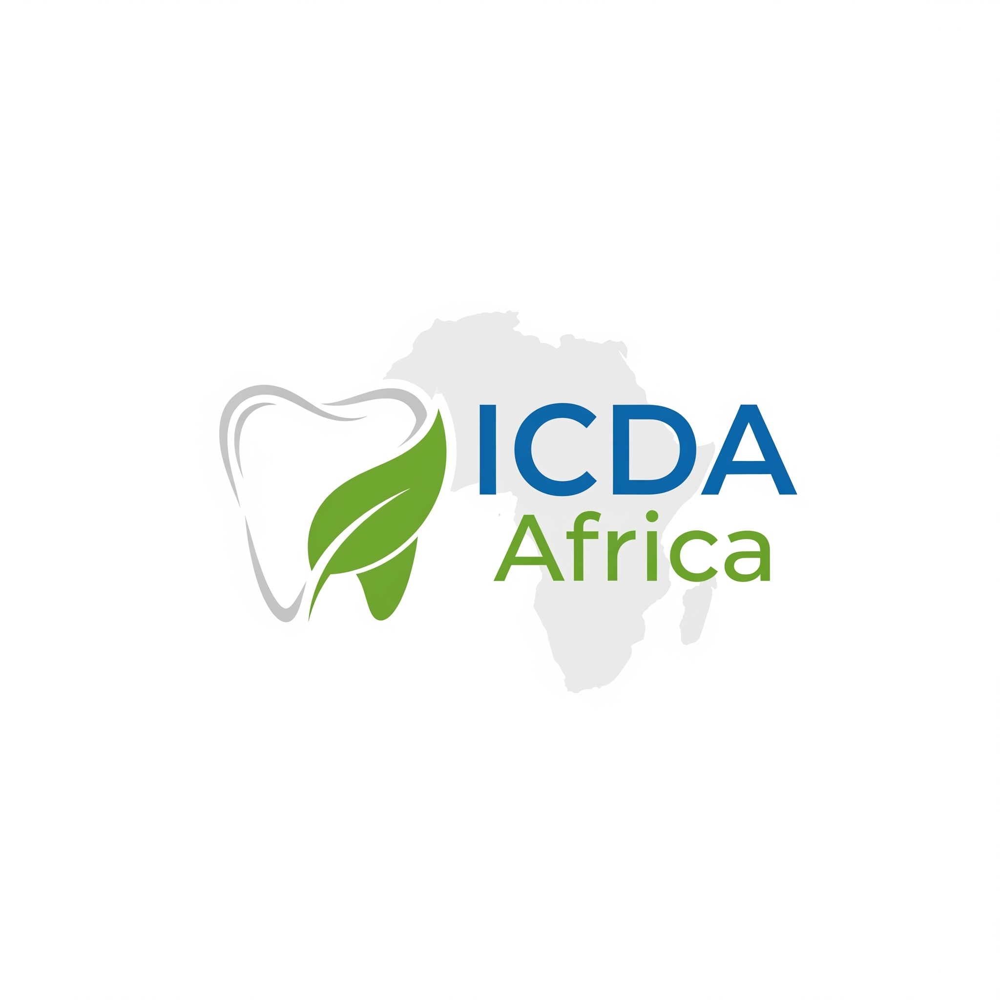

Founded
August 2021
Established to transform oral health across Africa through education, outreach and systems-strengthening.

Ubuntu in African Dentistry
Indepth Community Dentistry Africa is a private not-for-profit organisation advancing oral health across Africa by bridging communities with the oral health workforce, promoting prevention and conservative dentistry, and strengthening integrated NCD prevention.
August 2021
Established to transform oral health across Africa through education, outreach and systems-strengthening.
Lubaga Hospital, Kampala
Started as a dental study group focused on clinical excellence and community impact.
Open Dental Care – Paragon Hospital, Bugolobi
Luthuli Avenue, Kampala, Uganda
Private Not-for-Profit (PNFP)
Registered as a charitable organization serving the public good.
Core values that guide our work across the continent
We operate with integrity and openness to serve communities effectively.
We prioritise service and care for human dignity above self-interest.
We champion rights and sustainable practices that protect people and planet.
We strengthen African leadership and collaboration in oral health.
We foster collaboration and capacity-building for clinical excellence.
To bridge the gap between the general public and oral health workforce in the promotion of oral health and conservative dentistry, and prevention of NCDs in Africa.
A global organisation that spearheads oral and general health promotion and integration, and the advancement of the practice of dentistry in Africa.
Continuous professional development programs for dental students and professionals in leadership and clinical dental practice.
Pan-African unity body for African dental students and professionals. For joint promotion of oral health and dentistry across the continent.
School dental health clubs in St. Michael Secondary School, Soroti city, Eastern Uganda. First of its kind in the country.
Oral health awareness in schools and places of worship. Reached over 2000 African dental students and 1200+ practitioners in 16 countries across Western, Eastern, and Southern Africa. In Uganda, covered 8 districts of Teso (3000 children). Currently expanding to Busia district targeting 75,000+ people annually.
Foster unity among dental professionals
Promote oral health awareness and conservative dentistry
Advocate for universally accepted clinical standards
Conduct periodical research in clinics and communities
Health is a state of complete physical, mental, and social wellbeing — not merely the absence of disease. Oral health is fundamental to overall health, affecting nutrition, communication and quality of life. Poor oral health contributes to NCDs and other serious conditions.
Be part of a movement dedicated to professional excellence and community wellbeing.